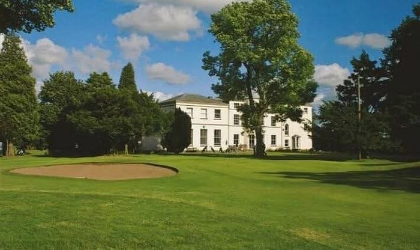

Welcome ...
Arcot Hall is a century old, James Braid designed parkland golf course in a private club setting ...
The cost for the day is £25
Please pay before the day using PayPal to
dale.aitkenhead@btinternet.com.
A portion of the funds collected will be used to make a donation
to Cancer Research.
Players should meet in the lounge before tee off.
Be sure to make your way to the first tee in advance of your tee
time to tee off after the group ahead of you have finished their
approach shots to the first green.
Individual Prizes
1st place individual stableford points.
A trophy will be presented for the overall individual stableford points winner. If stableford scores are tied, the player with the lowest handicap will receive the trophy.
2nd place individual stableford points.
3rd place individual stableford points.
1st place best gross score.
ie. lowest number of strokes for a round (no handicap adjustment). If gross scores are tied, the player with the lowest handicap will receive the trophy.
Team Prizes
1st place team
ie. sum of the best 2 stableford points for each hole.
2nd place team
ie. sum of the best 2 stableford points for each hole.
Nearest the pin Prizes
Nearest the pin on the 9th hole.
Nearest the pin on the 11th hole.
Nearest the pin on the 15th hole.
Presentation takes place after the last group finishes and all results are in.
Handicaps
Handicaps will be taken from WHS handicaps on England Golf. If you do not have a current handicap you can make prior arrangements with Dale (dale.aitkenhead@btinternet.com.).
Play will be standard stableford using your Course Handicap and the yellow tees.
Your Course Handicap will be the handicap shown next to your name.
The cut off point will be Friday 19th June 2026 to allow time for administration, with no late adjustments after this date.
All information will be published during the following week, leading up to the 28th.
Play
Teams of 4 play individual stableford.
Everyone records their individual stableford scores,
Also record the best 2 scores on each hole which will add up to your team score.
After completing your round, please enter these scores on the sheet at the bar.
Food and Drink
Arcot Hall golf club has it's own catering, open between 10:00am and 15:00pm: alcoholic and non-alcoholic drinks, various rolls, wraps, sandwiches, burgers etc. are available.
Food and drinks menus are below and there is a Sunday Lunch Menu which will normally requires booking.